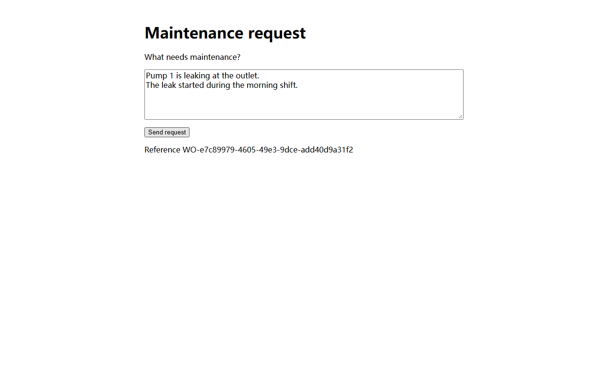

2026-11-12T11:00:33.201Z · Scope External Web, API and Android · Ticket WO-e7c89979-4605-49e3-9dce-add40d9a31f2
WO-e7c89979-4605-49e3-9dce-add40d9a31f2
Recorded v0.2.0 release acceptance run · commit 0d8f36a
0d8f36a
ADB found an authorized physical device and the APK package names match.
Web created and displayed work order WO-e7c89979-4605-49e3-9dce-add40d9a31f2.
Lookup returned the same work order WO-e7c89979-4605-49e3-9dce-add40d9a31f2 with status resolved and expected labels pump-1 / leak.
The physical Android device looked up and displayed the same work order WO-e7c89979-4605-49e3-9dce-add40d9a31f2 and labels.

The test ran on a physical Pixel 4 XL running Android 11 (API 30). The external API returned resolved, which the Android lookup maps to completed.
resolved
completed
INSTRUMENTATION_RESULT: stream= Ticket UI assertions passed Ticket ID: WO-e7c89979-4605-49e3-9dce-add40d9a31f2 Status: completed Device: pump-1 Category: leak INSTRUMENTATION_CODE: -1
v0.2.0 release notes · Four-layer model report